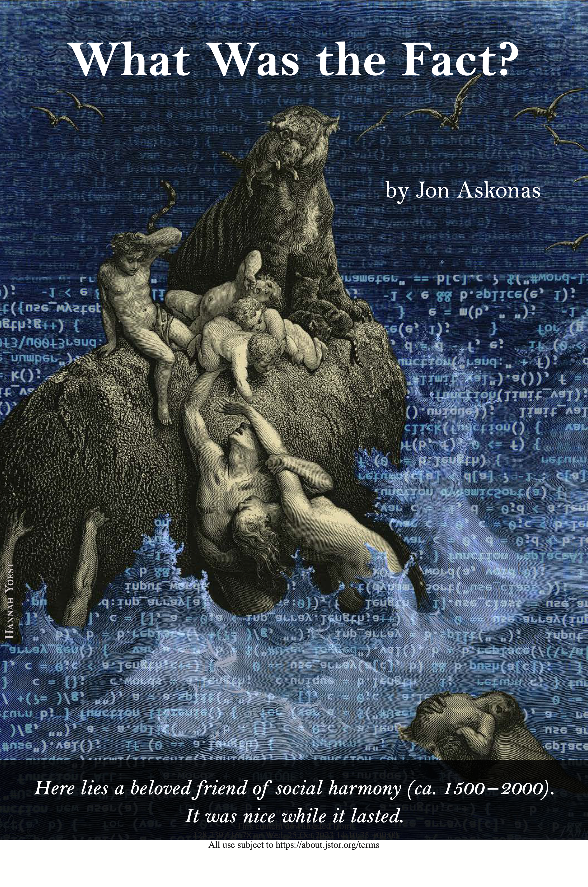

Page
What was the fact?
[T]he power of facts is now waning, not because we don’t have enough of them but because we have so many. What is replacing the old hegemony of facts is not a better and more authoritative form of knowledge but a digital deluge that leaves us once again drifting apart. ... Learning to live together in truth even when the fact has lost its power is perhaps the most serious moral challenge of the twenty-first century.
Jon Askonas
Assignment for Friday October 27 (no class)
- Read Askonas, J. (2023). What was the fact? The New Atlantis, (72), 18-55. [see Readings]
